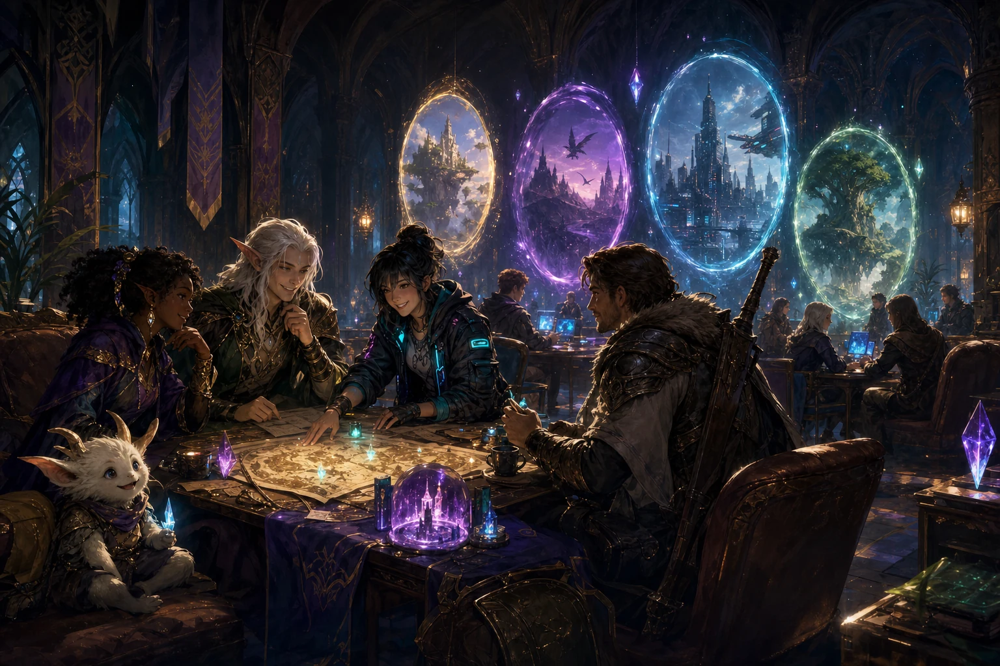

Text rooms
Find the people first
Share a game, ask who wants to join, compare builds, post clips or arrange a day and time without filling the main guild channels.
Guild · Other Games
Lumina is an organized Tibia guild on Secura, but friendship does not stop at one game. Our Discord includes text and voice spaces where members can discover, discuss and play other MMORPGs, RPGs and cooperative games together.

Curiosity without fragmentation
Members naturally try new releases, return to old favorites and invite friends into short cooperative sessions. Lumina welcomes that variety because communities are made of people, not one login screen.
What remains stable is the organized guild itself: official membership, rank structure, recruitment and long-term guild operations stay attached to Tibia and the world of Secura.
Return to the Lumina overview →
Inside our Discord
Members do not need to create a separate server or wait for an official guild event. Our Discord provides shared spaces for starting a conversation, finding interested players and moving into voice when a session begins.
Share a game, ask who wants to join, compare builds, post clips or arrange a day and time without filling the main guild channels.
Move into a voice room when the group is ready. Members can talk, coordinate and use Discord screen sharing during the session.
The clear boundary
This distinction keeps expectations honest for members and candidates.
Games you may find us playing
Interests change as new releases arrive and old favorites call people back. These examples show the kinds of conversations and informal sessions that can appear in our Discord; they are not permanent Lumina divisions or guaranteed scheduled groups.
Long-running online worlds naturally appeal to players who already enjoy progression, teamwork and character building.
Members also exchange recommendations, choices, builds and stories from large single-player or party-based adventures.
Some evenings are simply about assembling a small group, sharing a voice room and enjoying a session without long-term obligations.
The important distinction: a popular game can create many shared evenings, but official Lumina membership, ranks and organized guild operations still belong to Tibia on Secura.
A lightweight social flow
Other-game sessions can form naturally inside the Discord our members already use. Nothing needs to become a second guild before people are allowed to enjoy it together.
Post what you want to play, when you are available and whether you need a full party or just one more person.
Use voice, live coordination and screen sharing when the session begins, then leave the room ready for the next group.
The evening can end without creating new ranks, rosters or obligations. The same friends remain connected through Lumina.

The constant
Discord gives members one place to reconnect, share discoveries and return to the organized guild when the next hunt, quest or event begins on Secura.
Looking for the organized guild?
If that is the world where you want a long-term guild, review our membership path and official standards.